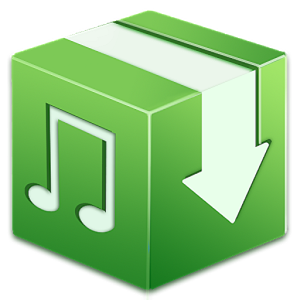

No pagarás nada, nosotros nos encargamos tu solo disfruta

Desde la propia página o desde la aplicación se puede escuchar toda la musica disponible. No solo se puede escuchar, tambien se pueden descargar los temas en tu dispositivo movil o en tu ordenador para escucharla en tu propio reproductor
Iremos subiendo las nuevas canciones a las 2 semanas de que hayan salido, ya que los cantantes y grupos tienen que tener algo de ingresos. Solo se subira la cancion completa, omitiendo el contenido que aparezca en el video para escuchar solo lo más importante
¡De la mejor wiki musical online y gratis que nunca jamas vas a encontrar!